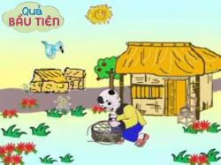
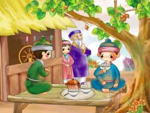

Tổng hợp những câu nói hay nhất về tình yêu

Quả bầu tiên - Truyện cổ tích Việt Nam về tấm lòng nhân hậu
Những câu nói hay về nghị lực, ý chí vươn lên trong cuộc sống

Truyện cổ tích thế tục Việt Nam hay và ý nghĩa nhất
Truyện cổ tích về các nàng công chúa xinh đẹp
Tổng Hợp Những Câu Nói Hay Về Giá Trị Của Bản Thân
Tổng Hợp Những Câu Nói Hay Về Giá Trị Của Bản Thân